ខេត្តនៅក្នុងប្រទេសកម្ពុជា
សូមស្វាគមន៏មកកាន់ខេត្តកំពង់ចាម
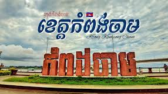
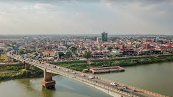
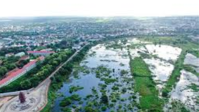
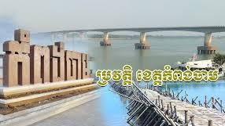
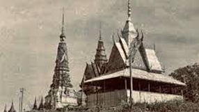
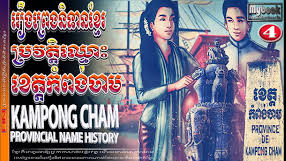
១. ដើមកំណើតនាម "កំពង់ចាម"
ពាក្យថា "កំពង់ចាម" គឺបានក្លាយមកពីពាក្យដើមថា "កំពង់រង់ចាំ"។
កំពង់រង់ចាំ (Kampong Rong Chamm): បើតាមឯកសារ និងការដំណាលតៗគ្នារបស់អ្នកស្រុក បានឱ្យដឹងថា ទីតាំងក្រុងកំពង់ចាមបច្ចុប្បន្ន គឺជាកន្លែងសំចត ឬជាកំពង់ផែដ៏សំខាន់នៅតាមដងទន្លេមេគង្គ។
រង់ចាំសាឡាង/ទូក: មនុស្សជាច្រើន ទាំងពាណិជ្ជករ និងអ្នកដំណើរ តែងតែមកឈប់សំចតនៅទីនេះ ដើម្បី រង់ចាំសាឡាង ឆ្លងទៅត្រើយខាងកើត (ទន្លេបិទ) ឬរង់ចាំការធ្វើនាវាចរណ៍បន្ត។
រង់ចាំស្ដេច: មានឯកសារខ្លះក៏បានដំណាលថា កំពង់នេះជាកន្លែងដែលគេមក ចាំដង្ហែរស្ដេចបក្សីចាំក្រុង ឆ្លងទៅត្រើយខាងកើតផងដែរ។
ការក្លាយឈ្មោះ: យូរៗទៅ ពាក្យ "កំពង់រង់ចាំ" ក៏បានខ្លីមកត្រឹម "កំពង់ចាំ" ហើយបានក្លាយទៅជា "កំពង់ចាម" រហូតមកដល់សព្វថ្ងៃ។
ចំណាំ: ឈ្មោះ "កំពង់ចាម" មិនមែនមានន័យថា "កំពង់របស់ជនជាតិចាម (ខ្មែរឥស្លាម)" នោះទេ ទោះបីជាខេត្តនេះក៏មានជនជាតិចាមរស់នៅច្រើនតាមដងទន្លេមេគង្គក៏ដោយ។
២. សម័យកាលប្រវត្តិសាស្ត្រសំខាន់ៗ
ក. សម័យបុរាណ និងសម័យអង្គរ
ទឹកដីចំណាស់: ខេត្តកំពង់ចាម ជាទឹកដីដ៏ចំណាស់ដែលមានស្លាកស្នាមអរិយធម៌តាំងពី សម័យមុនអង្គរ មកម្ល៉េះ។
សំណង់ប្រវត្តិសាស្ត្រ: នៅសេសសល់នូវប្រាសាទបុរាណ ទួលបុរាណ និងបុរាណវត្ថុជាច្រើន ដែលបង្ហាញពីភាពរុងរឿងរបស់តំបន់នេះក្នុងសម័យនគរខ្មែរដូចជា៖
ប្រាសាទនគរបាជ័យ
ប្រាសាទភ្នំហាន់ជ័យ
ប្រាសាទព្រះធាតុទឹកឆា
ខ. សម័យអាណានិគមបារាំង
មជ្ឈមណ្ឌលពាណិជ្ជកម្ម: ក្នុងសម័យអាណានិគមបារាំង ខេត្តកំពង់ចាមបានក្លាយជា មជ្ឈមណ្ឌលពាណិជ្ជកម្ម ដ៏សំខាន់មួយនៅតាមដងទន្លេមេគង្គ។
ស្ថាបត្យកម្មបារាំង: រហូតមកដល់បច្ចុប្បន្ន ក្រុងកំពង់ចាម នៅតែរក្សាបាននូវ អគាររចនាបថបារាំង ចាស់ៗជាច្រើន ជាពិសេសនៅតាមបណ្តោយមាត់ទន្លេ ដែលផ្តល់នូវភាពទាក់ទាញផ្នែកប្រវត្តិសាស្ត្រ។
ដំណាំកៅស៊ូ: ក្នុងឆ្នាំ ១៩២១ ដីក្រហមនៅតំបន់ជប់ (Chŭb Hill) ត្រូវបានគេរកឃើញថា ស័ក្តិសមសម្រាប់ការដាំដុះ ដំណាំកៅស៊ូ ដែលបានក្លាយជាប្រភពចំណូលដ៏សំខាន់របស់ប្រទេសក្នុងសម័យនោះ។
គ. ការបែងចែកខេត្ត (២០១៣)
កំណាត់ខេត្ត: កាលពីមុន ខេត្តកំពង់ចាមគឺជាខេត្តធំជាងគេ និងមានប្រជាជនច្រើនជាងគេបំផុតនៅក្នុងប្រទេសកម្ពុជា។ ប៉ុន្តែនៅថ្ងៃទី ៣១ ខែធ្នូ ឆ្នាំ ២០១៣ រាជរដ្ឋាភិបាលបានធ្វើការបែងចែកខេត្តនេះជាពីរ៖
ដីនៅ ខាងលិចទន្លេមេគង្គ ត្រូវបានរក្សាទុកជា ខេត្តកំពង់ចាម។
ដីនៅ ខាងកើតទន្លេមេគង្គ ត្រូវបានបង្កើតជាខេត្តថ្មី គឺ ខេត្តត្បូងឃ្មុំ។
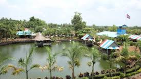
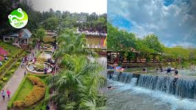
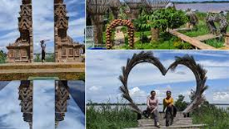
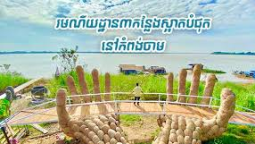
ខេត្តកំពង់ចាម ជាខេត្តមួយដែលមានទីតាំងនៅកណ្ដាលដីទំនាបទន្លេមេគង្គ មិនត្រឹមតែមានប្រវត្តិយូរលង់ប៉ុណ្ណោះទេ ថែមទាំងមានរមណីយដ្ឋានវប្បធម៌ ប្រវត្តិសាស្ត្រ និងធម្មជាតិជាច្រើនកន្លែងដែលគួរឱ្យចាប់អារម្មណ៍។
១. តំបន់ទេសចរណ៍វប្បធម៌ និងប្រវត្តិសាស្ត្រ
ក. ប្រាសាទ និងវត្តបុរាណ
ឈ្មោះទីតាំង លក្ខណៈពិសេស
ប្រាសាទនគរបាជ័យ (Wat Nokor Bachey) ជាប្រាសាទបុរាណមួយមានតាំងពី សតវត្សរ៍ទី ១១ ក្នុងរចនាបថអង្គរ ដែលមានលាយឡំនឹងវត្តអារាមសម័យទំនើប។ ទីតាំងនេះជាបូជនីយដ្ឋានវប្បធម៌ និងប្រវត្តិសាស្ត្រដ៏សំខាន់របស់ខេត្ត។
ភ្នំប្រុស-ភ្នំស្រី (Phnom Srei and Phnom Pros) ជារមណីយដ្ឋានដែលមានរឿងនិទានប្រវត្តិសាស្ត្រទាក់ទងនឹងការប្រកួតគាស់ដីរបស់មនុស្សប្រុស និងមនុស្សស្រី។ នៅទីនោះមានវត្តអារាម និងចេតិយ៍ដ៏ធំនៅលើកំពូលភ្នំដែលផ្ដល់នូវទេសភាពស្រស់ស្អាត។
ភ្នំហាន់ជ័យ (Phnom Han Chey) ជារមណីយដ្ឋានប្រវត្តិសាស្ត្រដែលស្ថិតនៅលើភ្នំមួយជាប់មាត់ទន្លេមេគង្គ។ នៅទីនោះមានប្រាសាទបុរាណ និងវត្តអារាម ហើយភ្ញៀវទេសចរអាចឡើងតាមជណ្តើរ ២៩៥ កាំ ដើម្បីគយគន់ទេសភាពទន្លេមេគង្គដ៏ស្រស់ស្អាត។
វត្តមហាលើប (Wat Moha Leap) ជាវត្តអារាមឈើមួយក្នុងចំណោមវត្តឈើចាស់ៗនៅសេសសល់តិចតួចបំផុតក្នុងប្រទេសកម្ពុជា។ វត្តនេះសាងសង់តាំងពីឆ្នាំ ១៨៩៤ ដែលមានស្ថាបត្យកម្មដ៏កម្រ និងមានតម្លៃជាប្រវត្តិសាស្ត្រ។
Export to Sheets
ខ. សំណង់អគារសម័យអាណានិគម
អគារបារាំងចាស់ៗ និងអគាររដ្ឋបាលខេត្ត: ក្រុងកំពង់ចាមមានសំណង់អគារបារាំង (French Colonial Buildings) ចាស់ៗជាច្រើននៅតាមបណ្ដោយមាត់ទន្លេ ដែលបង្ហាញពីអតីតកាលជាមជ្ឈមណ្ឌលពាណិជ្ជកម្មដ៏សំខាន់ក្នុងសម័យអាណានិគម។
ប៉មយាមបារាំង (The French Watchtower): ស្ថិតនៅក្បែរមាត់ទន្លេមេគង្គ ជាអគារប្រវត្តិសាស្ត្រដែលធ្លាប់បម្រើការជាកន្លែងសង្កេតការណ៍។
២. តំបន់ទេសចរណ៍ធម្មជាតិ និងកសិទេសចរណ៍
ក. តំបន់ទន្លេ និងកោះ
ឆ្នេរខ្សាច់កោះប៉ែន (Koh Paen Beach): ជារមណីយដ្ឋានឆ្នេរខ្សាច់ដ៏ល្បីល្បាញ ដែលស្ថិតនៅចុងកោះប៉ែន ក្បែរទីរួមខេត្ត។ ឆ្នេរនេះទាក់ទាញភ្ញៀវទេសចរឱ្យទៅលេងទឹក ជិះទាទឹក និងអង្គុយលំហែរកាយតាមមាត់ទន្លេ ជាពិសេសក្នុងរដូវប្រាំង។
ស្ពានឬស្សីកោះប៉ែន (Ko Paen Bamboo Bridge): ជាស្នាដៃសិប្បកម្មដ៏អស្ចារ្យដែលអ្នកស្រុកសង់ឡើងជារៀងរាល់ឆ្នាំក្នុងរដូវប្រាំង ដើម្បីភ្ជាប់ទីរួមខេត្តទៅកោះប៉ែន។ ការដើរឆ្លងកាត់ស្ពាននេះជាបទពិសោធន៍ដ៏ប្លែកមួយ។
កោះប៉ែន (Koh Paen Island): ជាកោះតូចមួយនៅកណ្ដាលទន្លេមេគង្គ ដែលល្អបំផុតសម្រាប់ការ ជិះកង់ ឬម៉ូតូកម្សាន្ត មើលផ្ទះឈើលើសសរខ្ពស់ៗ និងគយគន់ជីវភាពរស់នៅតាមជនបទបែបខ្មែរពិតៗ។
ខ. រមណីយដ្ឋានធម្មជាតិ និងកសិទេសចរណ៍
កសិ-ទេសចរណ៍ ថ្មដាទឹកឆា: ជារមណីយដ្ឋានដែលរួមបញ្ចូលទាំងរមណីយដ្ឋានទឹកធ្លាក់/ប្រភពទឹក ក្បាលហុងទឹកឆា ដែលមានប្រភពទឹកហូរថ្លាឆ្វង់ពីក្នុងដី។ តំបន់នេះសម្បូរដោយទេសភាពព្រៃភ្នំ និងល្អសម្រាប់ការលេងទឹកកម្សាន្ត។
ចំការកៅស៊ូជប់ (Chup Rubber Plantation): ខេត្តកំពង់ចាម ល្បីល្បាញខាងដីក្រហម និងដំណាំកៅស៊ូ។ ភ្ញៀវទេសចរអាចទៅទស្សនាចំការកៅស៊ូដ៏ធំល្វឹងល្វើយនេះ ដែលជាផ្នែកមួយនៃប្រវត្តិសេដ្ឋកិច្ចរបស់ប្រទេស។
ទំនប់តាកុដ: ជារមណីយដ្ឋានអាងស្តុកទឹកមួយដែលអាចលេងកម្សាន្ត ជាពិសេសក្នុងរដូវវស្សា។
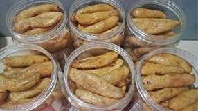
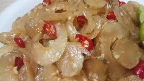
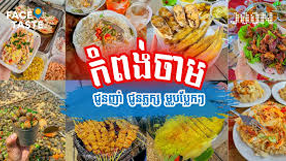

ខេត្តកំពង់ចាម ជាទីក្រុងមាត់ទន្លេដែលមានវប្បធម៌ និងមុខម្ហូបដ៏សម្បូរបែប ដែលលាយឡំនូវឥទ្ធិពលខ្មែរ ចាម និងចិន។ ខាងក្រោមនេះជាម្ហូបល្បីៗ និងពិសេសៗដែលអ្នកគួរតែសាកល្បងនៅខេត្តកំពង់ចាម៖
១. មុខម្ហូបពិសេសប្រចាំខេត្ត
ក. ម្ហូបប្រពៃណីខ្មែរ
នំបញ្ចុក (Nom Banh Chok): នំបញ្ចុកគឺជាអាហារពេលព្រឹកដ៏ពេញនិយមបំផុត ដែលមានសរសៃនំបញ្ចុកស្រស់ៗ ញ៉ាំជាមួយទឹកសម្លរខ្មែរ (សម្លរណាំយ៉ាត្រី ឬសម្លរខ្ទិះ) និងបន្លែស្រស់ៗជាច្រើនមុខ។ នៅកំពង់ចាម រសជាតិទឹកសម្លរប្រហែលជាមានលក្ខណៈពិសេសប្លែកពីភ្នំពេញ។
ប្រហុកខ្ទិះ (Prahok Ktis): ម្ហូបមួយប្រភេទដែលពេញនិយមដោយសាររសជាតិដើមរបស់ខ្មែរ។ វាជាប្រហុកលាយជាមួយសាច់ជ្រូកចិញ្ច្រាំ ខ្ទិះដូង និងគ្រឿងផ្សំផ្សេងៗ ញ៉ាំជាលក្ខណៈទឹកជ្រលក់ជាមួយបន្លែស្រស់ៗ។
អាម៉ុកត្រី (Amok Trey): ជាម្ហូបជាតិដ៏ល្បីរបស់ខ្មែរ ធ្វើពីត្រី ខ្ទិះដូង គ្រឿងការី (kroeung) ចំហុយក្នុងស្លឹកចេក។ នៅកំពង់ចាមដែលជាខេត្តមាត់ទន្លេ ត្រីសម្រាប់ធ្វើអាម៉ុកមានរសជាតិស្រស់ល្អ។
ខ. ម្ហូបពិសេសរបស់កំពង់ចាម
តាសក់ចាវ: គឺជាអាហារប្រចាំខេត្តកំពង់ចាមដ៏ល្បីឈ្មោះ ដែលមានរសជាតិ ប្រៃផ្អែមល្មម អាចញ៉ាំជាមួយបាយ ឬបបរ ឬយកទៅចិញ្ច្រាំចៀនជាមួយពងទា ឫស្លរជាមួយសាច់ក៏បាន។
ម្ជូរខ្ទិះក្តាមកំពង់ចាមចាំស្នេហ៍ (Somlar Machu Ktis Kdarm): ជាម្ជូរខ្ទិះដែលប្រើក្តាមជាគ្រឿងផ្សំ ជាមួយនឹងរសជាតិជូរផ្អែមប្រៃ និងហឹរ។ មុខម្ហូបនេះធ្លាប់ជាប់ចំណាត់ថ្នាក់ក្នុងព្រឹត្តិការណ៍ម្ហូបអាហារថែមទៀតផង។
សម្លប្រហើរល្ពៅសម្រស់បុប្ផាភ្នំប្រុសភ្នំស្រី: ជាសម្លរប្រហើរដែលមានល្ពៅ ជាគ្រឿងផ្សំសំខាន់។
២. អាហារពេលព្រឹក និងអាហារតាមដងផ្លូវ
បាយសាច់ជ្រូកអាំង (Bai Sach Chrouk): ជាអាហារពេលព្រឹកដ៏ពេញនិយមបំផុតនៅទូទាំងប្រទេសកម្ពុជា រួមទាំងកំពង់ចាមផងដែរ។ សាច់ជ្រូកអាំងលើធ្យូងថ្មដ៏ឈ្ងុយឆ្ងាញ់ ញ៉ាំជាមួយបាយស និងជ្រក់ត្រសក់។
គុយទាវ (Kuy Teav): ស៊ុបគុយទាវឆ្អឹងជ្រូក ឬសាច់គោ គឺជាអាហារពេលព្រឹកដែលគេនិយមបរិភោគ។
លតឆា (Lort Cha): មីអង្ករខ្លីៗឆាជាមួយពងទា សណ្ដែកបណ្ដុះ និងសាច់។
ត្រីអាំងមាត់ទន្លេមេគង្គ (Grilled Mekong Fish): ដោយសារកំពង់ចាមស្ថិតនៅតាមដងទន្លេមេគង្គ ត្រីមេគង្គអាំង ឬចៀននៅតាមតូបអាហារមាត់ទន្លេ គឺជាជម្រើសដ៏ល្អមួយ ជាពិសេសពេលល្ងាច។
ផ្លែឈើស្រស់ និងទឹកអំពៅ: នៅផ្សារ ឬតាមដងផ្លូវ មានលក់ផ្លែឈើស្រស់ៗតាមរដូវកាលដូចជា មង្ឃុត ត្របែក ឬស្រកានាគ និង ទឹកអំពៅ ស្រស់ៗដែលជាភេសជ្ជៈដ៏ល្អសម្រាប់បន្ថយកម្តៅ។
៣. ភោជនីយដ្ឋានពេញនិយមមួយចំនួន
ក្រុងកំពង់ចាម មានភោជនីយដ្ឋាន និងអាហារដ្ឋានជាច្រើនប្រភេទ រួមមាន៖
ភោជនីយដ្ឋាន ហាណូយ អាន (TA MAB HAO AN Restaurant): ស្ថិតនៅកណ្តាលក្រុងកំពង់ចាម បម្រើម្ហូបខ្មែរ និងចិន។
ភោជនីយដ្ឋាន ស្មាយល៍ (Smile Restaurant): ស្ថិតនៅផ្លូវមាត់ទន្លេ ជាជម្រើសដ៏ពេញនិយមសម្រាប់ភ្ញៀវទេសចរ។
អាហារដ្ឋានតាមមាត់ទន្លេ: ពេលល្ងាច តាមបណ្តោយមាត់ទន្លេមានកន្លែងលក់អាហារតាមផ្លូវ និងសាច់អាំង BBQ ជាច្រើនកន្លែង។
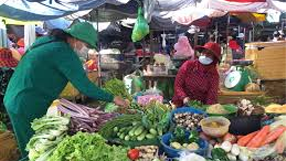
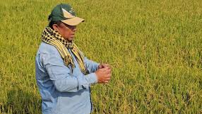
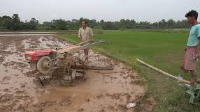
ខេត្តកំពង់ចាម ជាខេត្តមួយស្ថិតនៅតំបន់វាលទំនាបកណ្តាលនៃដងទន្លេមេគង្គ ដែលមានប្រវត្តិយូរលង់តាំងពីសម័យបុរាណ និងមានភាពសម្បូរបែបខាងវប្បធម៌។
១. ព័ត៌មានទូទៅអំពីប្រជាជន
ក. ចំនួនប្រជាជន និងសន្ទភាព
ចំនួនប្រជាជន: គិតត្រឹមជំរឿនឆ្នាំ ២០១៩ ខេត្តកំពង់ចាមមានប្រជាជនប្រមាណ ៨៩៩.៧៩១ នាក់ (ទិន្នន័យនេះក្រោយការបែងចែកខេត្តកំពង់ចាមទៅជាខេត្តត្បូងឃ្មុំនៅឆ្នាំ២០១៣)។ គិតត្រឹមឆ្នាំ ២០២៤ ចំនួនប្រជាជនត្រូវបានរាយការណ៍ថាមានប្រមាណ ១.០៦២.៩១៤ នាក់។
ទីតាំងរស់នៅ: ប្រជាជនភាគច្រើនរស់នៅតំបន់ជនបទ ប៉ុន្តែក្រុងកំពង់ចាមដែលជាទីរួមខេត្ត មានសន្ទភាពប្រជាជនខ្ពស់។
ទីក្រុងកំពង់ចាម: គឺជាទីក្រុងធំទី ១២ របស់កម្ពុជា ដែលមានប្រជាជនប្រមាណ ៦១.៧៥០ នាក់ (ឆ្នាំ ២០២១)។
ខ. ជនជាតិ និងសាសនា
ជនជាតិភាគច្រើន: ជនជាតិ ខ្មែរ គឺជាជនជាតិភាគច្រើនបំផុត។
ជនជាតិភាគតិច (ជនជាតិចាម): ខេត្តកំពង់ចាម (ឈ្មោះដើម "កំពង់ចាម" ប្រែថា "កំពង់ផែរបស់ជនជាតិចាម") គឺជាដែនដីកំណើតរបស់ជនជាតិចាម ដែលជាសហគមន៍ជនជាតិភាគតិចដ៏សំខាន់មួយនៅកម្ពុជា។ ជនជាតិចាមភាគច្រើនប្រកាន់ខ្ជាប់នូវសាសនា ឥស្លាម។
សាសនា: សាសនាដែលប្រជាជនប្រកាន់ច្រើនជាងគេគឺ ព្រះពុទ្ធសាសនាថេរវាទ (ជាង ៩៧.៦%)។
២. របៀបរស់នៅ និងសេដ្ឋកិច្ច
ក. ជីវភាពរស់នៅតាមជនបទ និងទីក្រុង
តាមទីប្រជុំជន (ក្រុងកំពង់ចាម): របៀបរស់នៅមានភាពប្រទាក់ក្រឡាគ្នារវាងជីវិតមាត់ទន្លេដ៏ស្ងប់ស្ងាត់ និងសកម្មភាពពាណិជ្ជកម្ម។ ទីក្រុងនេះមានសំណង់អគារបន្សល់ទុកពីសម័យអាណានិគមបារាំង ដែលបង្ហាញពីប្រវត្តិសាស្ត្រនៃការធ្វើពាណិជ្ជកម្មកាលពីមុន។
តាមជនបទ: ប្រជាជនភាគច្រើនជា កសិករ និង អ្នកនេសាទ។ ជីវភាពរស់នៅរបស់ពួកគេពឹងផ្អែកយ៉ាងខ្លាំងលើដីស្រែ និងទន្លេមេគង្គ។
ខ. សកម្មភាពសេដ្ឋកិច្ចសំខាន់ៗ
កសិកម្ម:
ជាតំបន់ដាំដុះ ដំណាំកសិឧស្សាហកម្ម ដូចជា កៅស៊ូ (មានចម្ការកៅស៊ូធំៗ) និង ដំណាំហូបផ្លែ។
ប្រជាកសិករនៅតំបន់ខ្លះអាចធ្វើស្រែបាន មួយឆ្នាំ ៣ ដង ដោយសារតែមានប្រព័ន្ធធារាសាស្ត្រគ្រប់គ្រាន់ ជាពិសេសនៅតំបន់ជាប់មាត់ទន្លេ។
ពាណិជ្ជកម្ម និងសេវាកម្ម: ទីក្រុងកំពង់ចាមធ្លាប់ជាមជ្ឈមណ្ឌលពាណិជ្ជកម្មដ៏សំខាន់តាមដងទន្លេមេគង្គ ដែលទាក់ទាញឈ្មួញពីអាស៊ីអាគ្នេយ៍។ សព្វថ្ងៃនេះ អាជីវកម្មនៅតែរីកចម្រើននៅតាមផ្សារ និងតំបន់មាត់ទន្លេ។
សិប្បកម្ម និងផលិតផលក្នុងស្រុក: ផលិតផលល្បីឈ្មោះមួយចំនួនរបស់ខេត្តកំពង់ចាមមានដូចជា តាសក់ចាវ ដែលជាអាហារល្បីល្បាញតាំងពីក្នុងខេត្ត រហូតដល់ទូទាំងប្រទេស។
គ. វប្បធម៌ និងទំនៀមទម្លាប់
ឥទ្ធិពលវប្បធម៌ចម្រុះ: វប្បធម៌នៅកំពង់ចាមគឺជាការលាយឡំរវាងខ្មែរ ចាម និងឥទ្ធិពលបារាំង។
សហគមន៍ចាម: ភូមិចាមបង្ហាញពីរបៀបរស់នៅប្រកាន់សាសនាឥស្លាមយ៉ាងរស់រវើក ដោយមាន វិហារឥស្លាម (Masjid) ជាចំណុចស្នូលនៃសហគមន៍។ បុរសចាមភាគច្រើនប្រកបរបរកសិកម្ម ចំណែកស្ត្រីធ្វើការងារត្បាញ ឬលក់ដូរ។
ទេសចរណ៍ និងហេដ្ឋារចនាសម្ព័ន្ធ: ទេសចរណ៍កំពុងក្លាយជាផ្នែកមួយដ៏សំខាន់នៃជីវភាពរស់នៅ ដោយមានកន្លែងទាក់ទាញដូចជា ស្ពានឫស្សីឆ្លងកាត់ទន្លេមេគង្គ (តាមរដូវ) ប្រាសាទនគរបាជ័យ ភ្នំប្រុសភ្នំស្រី និងស្ថាបត្យកម្មបារាំងតាមមាត់ទន្លេ។
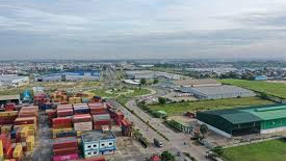
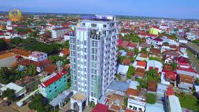
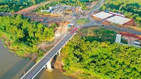
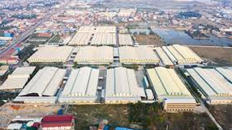
ទិដ្ឋភាពទូទៅនៃសេដ្ឋកិច្ចខេត្តកំពង់ចាម
ខេត្តកំពង់ចាមត្រូវបានគេចាត់ទុកជាយូរមកហើយថាជា មជ្ឈមណ្ឌលកសិកម្ម ដ៏សំខាន់មួយរបស់កម្ពុជា ដែលជាកម្លាំងចលករជំរុញសេដ្ឋកិច្ចក្នុងមូលដ្ឋានឲ្យរីកចម្រើនទាំងផ្នែកសេដ្ឋកិច្ច និងសង្គម។
កំណើនសេដ្ឋកិច្ច: ក្នុងឆ្នាំ ២០២៤ ទំហំសេដ្ឋកិច្ចរបស់ខេត្តកំពង់ចាមត្រូវបានរំពឹងថានឹងមានកំណើន ៨,៦ ភាគរយ ដល់ ២,៦៥ ពាន់លានដុល្លារ ដោយសារការជំរុញសំខាន់ពីវិស័យកសិកម្ម ឧស្សាហកម្ម និងសេវាកម្ម។
ការព្យាករណ៍: សម្រាប់ឆ្នាំ ២០២៥ សេដ្ឋកិច្ចខេត្តត្រូវបានព្យាករណ៍ថាអាចនឹងកើនឡើងដល់ ២,៨៦ ពាន់លានដុល្លារ ដែលបង្ហាញពីវឌ្ឍនភាពដ៏រឹងមាំ។
ផលិតផលក្នុងស្រុកសរុប (GDP) ក្នុងម្នាក់: GDP ក្នុងម្នាក់ត្រូវបានព្យាករណ៍ថានឹងកើនឡើងដល់ ២.៤៧៨ ដុល្លារ ក្នុងមួយឆ្នាំនៅឆ្នាំ ២០២៥។
វិស័យសំខាន់ៗដែលជំរុញការអភិវឌ្ឍន៍
១. វិស័យកសិកម្ម (Agri-business)
កសិកម្មគឺជាមូលដ្ឋានគ្រឹះនៃសេដ្ឋកិច្ចខេត្ត។ ខេត្តនេះមានដីក្រហមសម្បូរជីជាតិ និងធនធានទឹក ដែលសមស្របសម្រាប់ការដាំដុះ។
ដំណាំសំខាន់ៗ: ខេត្តកំពង់ចាមគឺជាអ្នកផលិត កៅស៊ូ ស្វាយចន្ទី និង ស្រូវ ដ៏សំខាន់។ ក្រៅពីនេះ ក៏មានដំណាំផ្សេងទៀតដូចជា ពោត ចេក ថ្នាំជក់ អំពៅ និងមានចំការផ្លែឈើជាច្រើនដូចជា ស្វាយ មង្ឃុត ល្មុត ទុរេន ត្រាវ និងសាវម៉ាវ។
សកម្មភាពពាក់ព័ន្ធ: ក្រៅពីការដាំដុះ ក៏មានវិស័យ នេសាទ ដ៏រស់រវើកនៅតាមដងទន្លេមេគង្គ និងការជំរុញការប្រើប្រាស់ ផលិតផលខ្មែរ ក្នុងមូលដ្ឋាន។
២. វិស័យឧស្សាហកម្ម
វិស័យឧស្សាហកម្មក៏មានការរីកចម្រើនដែរ ដោយរួមមាន៖
ឧស្សាហកម្មផលិតកម្ម: រោងចក្រកាត់ដេរមួយចំនួន និងរោងចក្រកែច្នៃកសិផលដូចជា កែច្នៃកៅស៊ូ រោងម៉ាស៊ីនកិនស្រូវ និងរោងចក្រផលិតចំណីអាហារ។
សក្តានុពលធនធានរ៉ែ: ខេត្តក៏មានសក្តានុពលធនធានរ៉ែផងដែរ ដូចជា រ៉ែដែក និងថ្មម៉ាប។
៣. វិស័យទេសចរណ៍ និងសេវាកម្ម
ហេដ្ឋារចនាសម្ព័ន្ធទេសចរណ៍: មានគម្រោងអភិវឌ្ឍន៍ កំពង់ផែទេសចរណ៍ថ្មី នៅក្រុងកំពង់ចាម ដែលត្រូវបានរំពឹងថានឹងក្លាយជាការតភ្ជាប់ដ៏សំខាន់សម្រាប់ភ្ញៀវទេសចរអន្តរជាតិ ដែលធ្វើដំណើរតាមនាវាទេសចរណ៍តាមដងទន្លេមេគង្គ។ គម្រោងនេះនឹងចូលរួមចំណែកលើកកម្ពស់វិស័យទេសចរណ៍ក្នុងខេត្ត។
ការអភិវឌ្ឍក្រុងឆ្លាត (Smart City): រដ្ឋាភិបាលក៏មានផែនការអភិវឌ្ឍន៍ក្រុងកំពង់ចាមទៅជា ក្រុងឆ្លាត ដោយបំពាក់ភ្លើងបំភ្លឺសាធារណៈ (LED) នៅតាមដងផ្លូវសំខាន់ៗ ដើម្បីទាក់ទាញ និងជំរុញវិស័យទេសចរណ៍។
វិស័យហិរញ្ញវត្ថុ: វិស័យធនាគារ និងហិរញ្ញវត្ថុបានរីកចម្រើនយ៉ាងខ្លាំង ដោយមានបណ្តាញគ្រឹះស្ថានធនាគារជាច្រើននៅទូទាំងខេត្ត។
ការអភិវឌ្ឍន៍ហេដ្ឋារចនាសម្ព័ន្ធ
ការវិនិយោគលើហេដ្ឋារចនាសម្ព័ន្ធគឺជាកត្តាគាំទ្រដ៏សំខាន់ដល់កំណើនសេដ្ឋកិច្ច។
ហេដ្ឋារចនាសម្ព័ន្ធផ្លូវថ្នល់: ខេត្តមានប្រព័ន្ធផ្លូវថ្នល់ ផ្លូវល្បឿនលឿន និងស្ពានជាច្រើនដែលភ្ជាប់តំបន់ជនបទទៅទីក្រុង។ ក៏មានគម្រោងស្ដារ និងកែលម្អ ផ្លូវជនបទ និង ផែចត នៅតាមកោះនានាក្នុងទន្លេមេគង្គ ទៅតាមស្តង់ដារធន់នឹងអាកាសធាតុ។
ប្រព័ន្ធធារាសាស្ត្រ: អាជ្ញាធរមូលដ្ឋានបាននិងកំពុងអភិវឌ្ឍន៍ប្រព័ន្ធធារាសាស្ត្រ ដូចជា អាងស្តុកទឹក ប្រឡាយមេ និងប្រឡាយរង ដើម្បីគាំទ្រដល់ការដាំដុះស្រូវ និងកាត់បន្ថយការប្រើប្រាស់ទឹកក្នុងរដូវប្រាំង តាមរយៈការសាកល្បងប្រព័ន្ធ ធារាសាស្ត្រខ្នាតតូច និង ប្រព័ន្ធបូមទឹកដោយថាមពលពន្លឺព្រះអាទិត្យ។